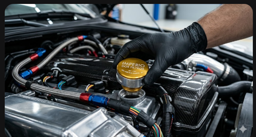
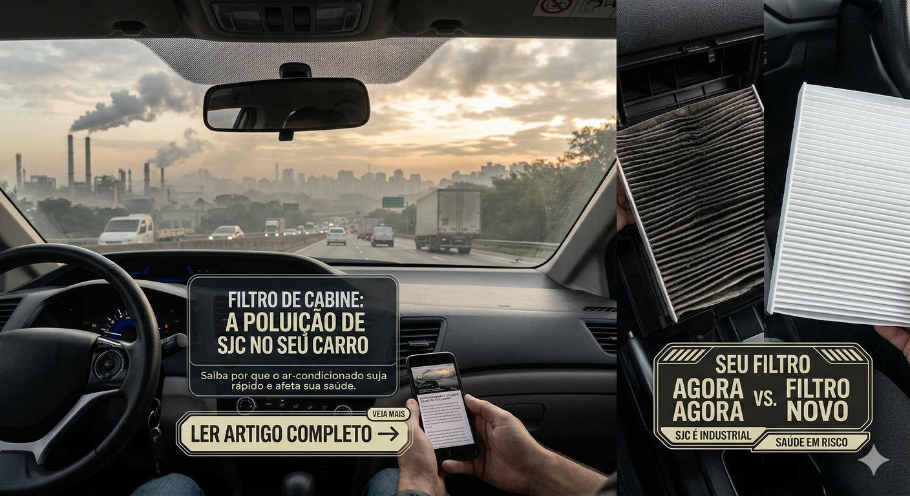
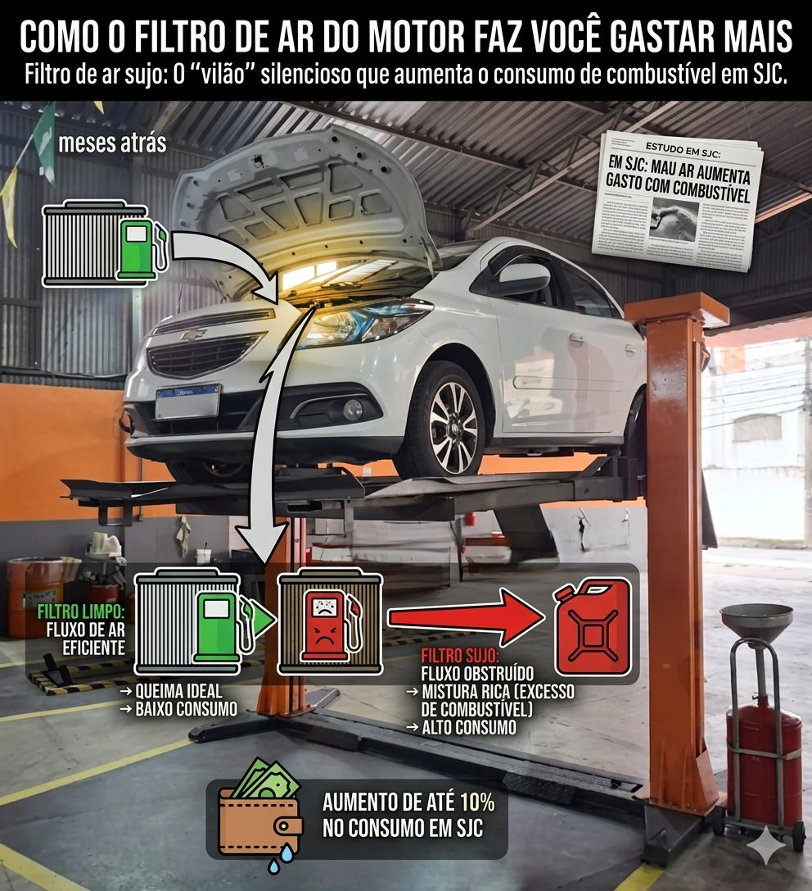

Troca de Óleo em SJC: Guia para Dutra e Tamoios
O trânsito pesado de São José dos Campos exige cuidados especiais com o lubrificante do motor para evitar borras.
Ler artigo completo →Dicas práticas para aumentar a vida útil do seu veículo e economizar.
Conteúdo especializado para quem cuida do carro em São José dos Campos.

O trânsito pesado de São José dos Campos exige cuidados especiais com o lubrificante do motor para evitar borras.
Ler artigo completo →
Muitos motoristas apenas completam o nível, mas isso mistura óleo novo com resíduos oxidados, prejudicando o motor.
Ler artigo completo →
SJC é uma cidade industrial. Saiba por que o filtro de ar-condicionado fica sujo tão rápido e afeta sua saúde.
Ler artigo completo →
Filtro de ar sujo: O "vilão" silencioso que aumenta o consumo de combustível no anda e para da cidade.
Ler artigo completo →Óleo de Câmbio Automático: Precisa trocar ou é "eterno"? Saiba a verdade sobre a manutenção da transmissão.
Ler artigo completo →
Entenda como a carbonização no corpo de borboleta afeta a marcha lenta do seu veículo e como resolver.
Ler artigo completo →Nossos especialistas respondem você na hora pelo WhatsApp.
Perguntar no WhatsApp